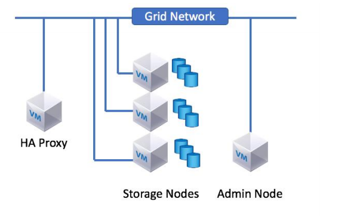
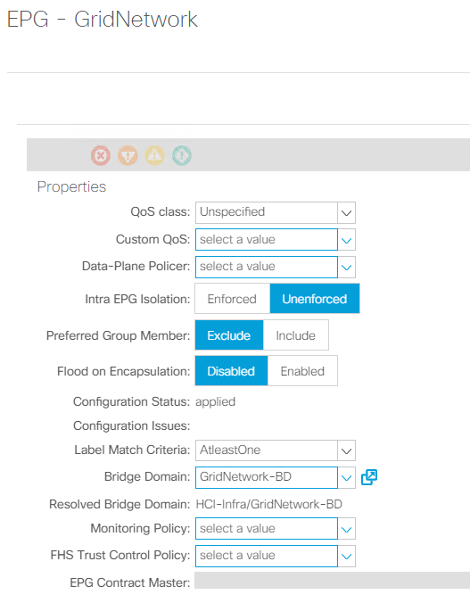

Private Cloud
Private Cloud
StorageGRID with VMware vSphere: NetApp HCI and Cisco ACI
 Suggest changes
Suggest changes
StorageGRID is a robust software-defined, object-based storage platform that stores and manages unstructured data with a tiered approach along with intelligent policy-driven management. It allows you to manage data while optimizing durability, protection, and performance. StorageGRID can also be deployed as hardware or as an appliance on top of a virtual environment that decouples storage management software from the underlying hardware. StorageGRID opens a new realm of supported storage platforms, increasing flexibility and scalability. StorageGRID platform services are also the foundation for realizing the promise of the hybrid cloud, letting you tier and replicate data to public or other S3-compatible clouds. See the StorageGRID documentation for more details. The following figure provides an overview of StorageGRID nodes.

Workflow
The following workflow was used to set up the environment. Each of these steps might involve several individual tasks.
-
Create an L2 BD and EPG for the grid network used for internal communication between the nodes in the StorageGRID system. However, if your network design for StorageGRID consists of multiple grid networks, then create an L3 BD instead of an L2 BD. Attach the VMM domain to the EPG with the Native switching mode (in the case of a Cisco AVE virtual switch) and with Pre-Provision Resolution Immediacy. The corresponding port group is used for the grid network on StorageGRID nodes.

-
Create a datastore to host the StorageGRID nodes.
-
Deploy and configure StorageGRID. For more details on installation and configuration, see the StorageGRID documentation. If the environment already has ONTAP or ONTAP Select, then you can use the NetApp Fabric Pool feature. Fabric Pool is an automated storage tiering feature in which active data resides on local high-performance solid-state drives (SSDs) and inactive data is tiered to low-cost object storage. It was first made available in NetApp ONTAP 9.2. For more information on Fabric Pool, see the documentation here.